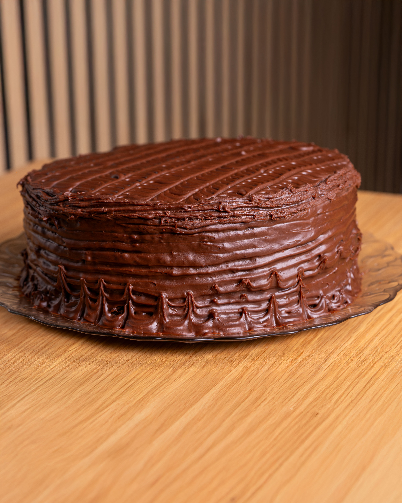
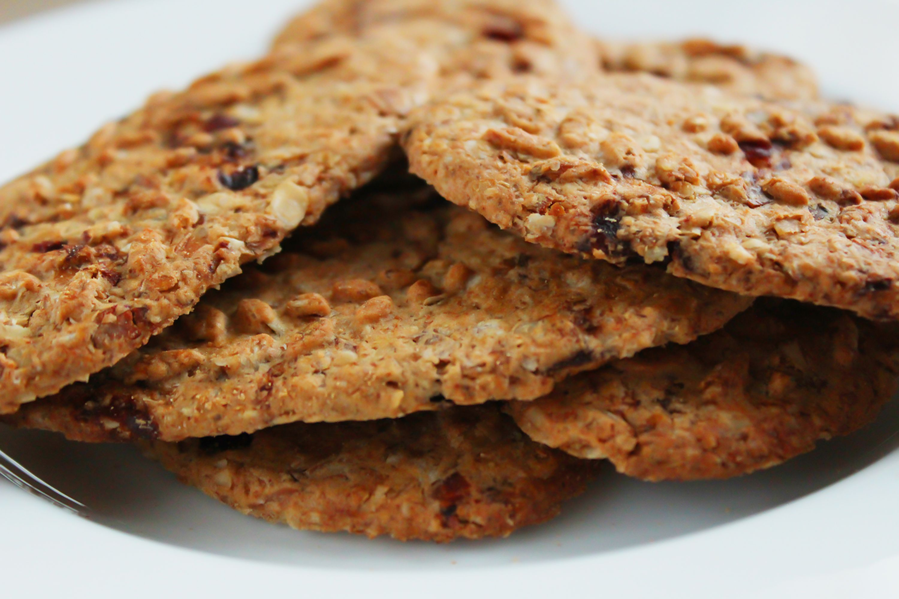
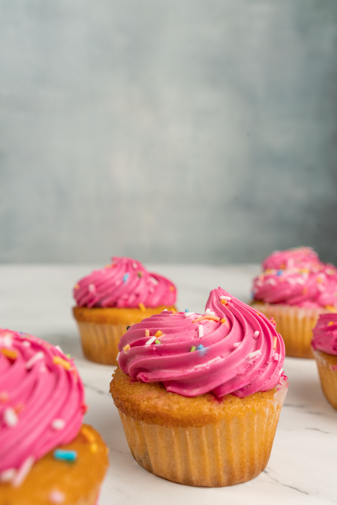

Pastel de chocolate

Este pastel de chocolate es perfecto para cualquier ocasion especial. Su textura es suave y esponjosa, y la cobertura de ganache le da un toque decadente.
Galletas de avena

Estas galletas de avena son saludables y deliciosas. Son crujientes por fuera y suaves por dentro, con un sabor a avena que te encantará.
Cupcakes de vainilla

Estos cupcakes de vainilla son perfectos para cualquier ocasión. Su textura es esponjosa y el frosting de crema les da un toque indulgente.